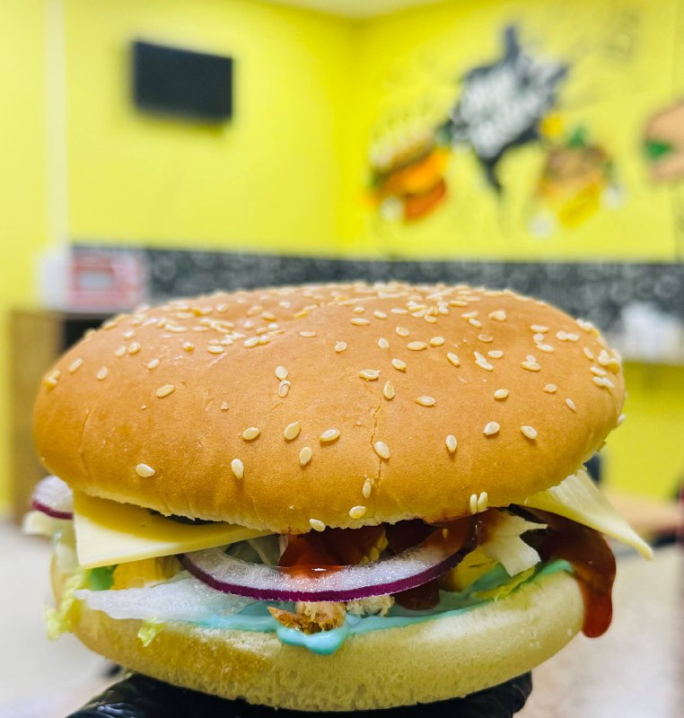
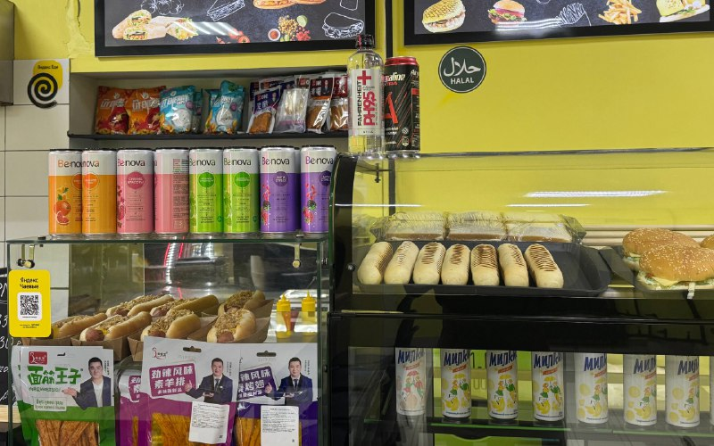

ФЕРМА-2, 76 · КАЗАНЬГОРЯЧАЯ ЕДА & СВОИ ЛЮДИ

ТОТ САМЫЙ ЧИКЕН / ФОТО ИЗ БИСТРО
ГДЕСВОИТАМ И ВКУСНО
Шаурма / Пицца / Горячее / КофеЗаглянуть на Ферма-2
02 / НА ФЕРМА-2БЕЗ ПОВОДА. КАЖДЫЙ ДЕНЬ.
СВОЁ
МЕСТО.
Где можно поесть.
И остаться ещё на чуть-чуть.
Забежать между занятиями, встретиться после работы или выпить кофе по дороге. У каждого свой повод. Место встречи одно — Әйдә.
Горячеедля большого перерыва
Кофедля маленькой паузы
Своидля хорошего дня

03 / ЕЩЁ ПРИЯТНЕЕЗАБЕГАЕШЬ ЧАСТО?
ЗАБЕГАЕШЬ ЧАСТО?
КОПИ БОНУСЫ.
Любимые блюда. Знакомые лица.
И бонусы за покупки.
ӘЙДӘ BISTRO БОНУСЫ
ХОРОШИЙПОВОДВЕРНУТЬСЯ
СПРОСИ О ПРОГРАММЕ НА КАССЕ
04 / НАША КОМПАНИЯНОВОСТИ · ОПРОСЫ · РОЗЫГРЫШИ
БИСТРО
НА СВЯЗИ.
Что нового, кого поздравляем и что разыгрываем на этой неделе — всё в нашем канале.
Зайти в TelegramМы есть и в MAXКОГДА ЗАБЕГАТЬ
- Понедельник — пятница
- 08:00–19:00
- Суббота — воскресенье
- 08:00–18:00
Изменения графика публикуем в Telegram.
ПОЗВОНИТЬ+7 927 409-86-17
ПАРА ВОПРОСОВ
Где посмотреть цены и сегодняшнее меню?
Здесь собраны блюда, о которых мы рассказываем в канале. Текущие цены и наличие уточни у команды: по телефону +7 927 409-86-17 или на кассе.
Как присоединиться к программе бонусов?
Спроси о регистрации на кассе или у бара. Команда объяснит, как подключиться, копить и использовать бонусы. Объявление о программе.
Где узнать о розыгрышах и новинках?
В Telegram-канале Әйдә Bistro. Там же — опросы, новости команды и изменения графика.